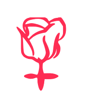

<ion-split-pane>

  <!-- logged out menu -->
  <ion-menu id="loggedOutMenu" [content]="content">

    <ion-header>
      <ion-toolbar>
        <ion-title>
          
          Por Ti Mujer 
        </ion-title>
      </ion-toolbar>
    </ion-header>

    <ion-content class="outer-content">

      <ion-list>
        <ion-list-header>
            <ion-icon name="hand"></ion-icon>
            Deteniendo la Violencia
        </ion-list-header>
        <button ion-item menuClose *ngFor="let p of informacionPages" (click)="openPage(p)" [class.activeHighlisght]="checkActive(p)">
          <ion-icon item-start [name]="p.icon" [style.color]="p.estilo" ></ion-icon>
          {{p.title}}
        </button>
      </ion-list>

      <ion-list>
        <ion-list-header>
          <ion-icon name="radio-button-on"></ion-icon>
          Prevenir y Comprender
        </ion-list-header>
        <button ion-item menuClose *ngFor="let p of contenidoPages" (click)="openPage(p)" [class.activeHighlisght]="checkActive(p)">
          <ion-icon item-start [name]="p.icon" [style.color]="p.estilo" ></ion-icon>
          {{p.title}}
        </button>
      </ion-list>

      <ion-list>
        <hr>
          <button ion-item menuClose="left" ><ion-icon name="close-circle" class="rojo"> </ion-icon> Cerrar</button>
      </ion-list>


    </ion-content>

  </ion-menu>


  <!-- main navigation -->
  <ion-nav [root]="rootPage" #content swipeBackEnabled="false" main name="app"></ion-nav>

</ion-split-pane>
